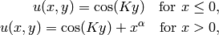
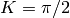
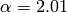

Line Singularity (Elliptic)¶
Git reference: Benchmark line-singularity.
The is another example with anisotropic solution that is suitable for testing anisotropic element refinements.
Equation solved: Poisson equation
(1)
Domain of interest: Square  .
.
Boundary conditions: Zero Neumann on left edge, Dirichlet given by the exact solution on the rest of the boundary.
Exact solution:

where  and
and  are real constants.
are real constants.
Right-hand side: Obtained by inserting the exact solution into the equation. The corresponding code snippet is shown below:
scalar rhs(scalar x, scalar y)
{
if (x < 0) return fn(x, y)*K*K;
else return fn(x, y)*K*K-ALPHA*(ALPHA-1)*pow(x, ALPHA - 2.) - K*K*pow(x, ALPHA);
}
Solution for  and :

Comparison of h-FEM (p=1), h-FEM (p=2) and hp-FEM with anisotropic refinements¶
Final mesh (h-FEM, p=1, anisotropic refinements):
Final mesh (h-FEM, p=2, anisotropic refinements):
Final mesh (hp-FEM, h-anisotropic refinements):
DOF convergence graphs:

CPU convergence graphs:
hp-FEM with iso, h-aniso and hp-aniso refinements¶
Final mesh (hp-FEM, isotropic refinements):
Final mesh (hp-FEM, h-anisotropic refinements):
Final mesh (hp-FEM, hp-anisotropic refinements):

The following convergence comparisons still correspond to an older version of Hermes2D when we did not have anisotropic hp-refinements. With those, the convergence of adaptive hp-FEM has improved a lot. These results will be updated soon.
DOF convergence graphs:

CPU convergence graphs: